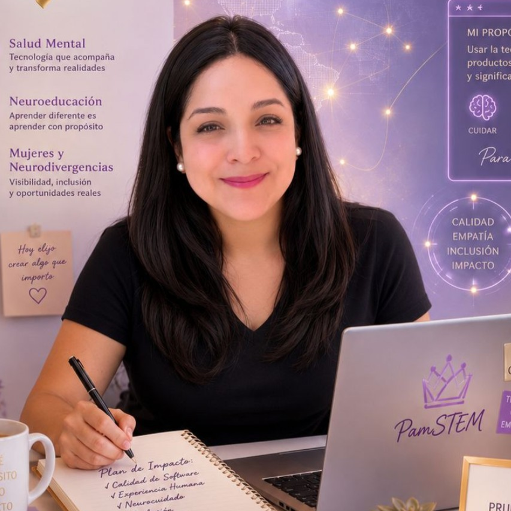

🎥 Mi Video CV
👑 QA Queen · Portfolio & Video CV
Conóceme en menos de dos minutos: mi historia, mi visión y cómo puedo aportar al equipo como QA Engineer.
Perfil Profesional
QA Engineer certificada · Fundadora de PamSTEM · QA Queen

Fundadora de PamSTEM | QA Queen 👑
"El cuidado también crea tecnología"
👑 QA Queen · Portfolio & Video CV
Conóceme en menos de dos minutos: mi historia, mi visión y cómo puedo aportar al equipo como QA Engineer.
QA Engineer certificada · Fundadora de PamSTEM · QA Queen